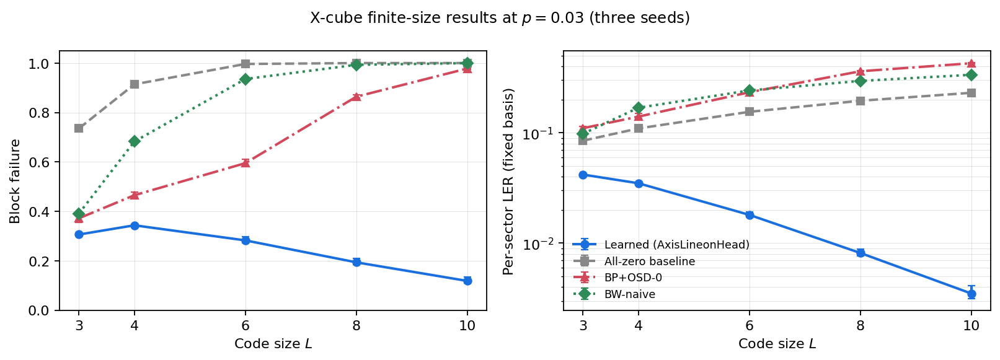

A four-paper program on recovering signals from algebraic syndrome constraints — when learned proposals help, and when exact algebra hurts.

Headline result: a structure-aware learned decoder for the X-cube fracton code. Per-sector logical error rate improves from \(L=3\) through \(L=10\) at \(p=0.03\), where generic baselines do not show the same scaling trend.
Each paper studies how algebraic constraints and learned neural proposals interact on 3D lattices. For the shortest path to the main result, start with the X-cube fracton paper and read the other three as foundations and controls. Every paper ships a PDF and an interactive, library-free tutorial you can run in the browser.
The X-cube code has subdimensional lineon structure. An AxisLineonHead aggregates evidence along the logical line geometry instead of flattening the problem into a generic 3D classifier — and scales favorably with code size where matching baselines struggle.
Pure spatial 3D convolutional decoders have measurable capacity knees. Multi-seed results compare classic and LC0-style residual blocks against paired MWPM across distances and physical error rates — mapping where learned decoders win, and where the capacity boundary becomes visible.
The corrected axial-parity voxel codec has codespace \(\mathrm{image}(d_x d_y d_z)\) — a discrete \(\mathbb{Z}_2\) fracton gauge structure. But hard-coding that exact algebra into the architecture underperforms a more flexible multi-scale bottleneck prior.
In 3D voxel compression, the useful constraints are local, overlapping, and content-aware. Targeted belief propagation and local surface checks refine a strong learned proposal, while hard high-weight global parity projections can erase the spatial information the model relies on.
Exact algebraic constraints define the feasible set, but they do not by themselves define the right decoder. Successful learned recovery requires an architecture whose inductive bias matches the geometry of the residual uncertainty.
Read conceptually, the sequence runs: gauge theorem → constraint locality → surface-code capacity → X-cube fracton decoding — from algebraic structure, to the classical learned-recovery design rule, to ordinary topological QEC, and finally to the nonlocal/subdimensional fracton case.
The repository contains source code, preprint PDFs, tutorials, selected figures, canonical result JSONs, and exact commands for the retained paper artifacts. Install dependencies, then run the smoke checks:
python3 -m pip install -r requirements.txt
# X-cube fracton — fast structural verification
cd fracton_xcube
python3 reproduce_xcube_results.py --verify-only --Ls 2 3 --out /tmp/xcube_verify.json
# Gauge theorem — closed-form codespace check
python3 verify_fracton_theorem.py
# Surface-code QEC — reproduce from checked-in multi-seed JSON
cd ../surface_code_qec
python3 reproduce_qec_results.py --results-dir data/qec_clean_knee_multiseed_json \
--distances 3,5,7,9,11 --seeds 42,43,44 --out /tmp/qec_reproduction.json
# Voxel compression — baseline reproduction
cd ../voxel_compression
python3 reproduce_results.py --baselines-only --n-samples 1 --out /tmp/voxel_reproduction.jsonSee REPRODUCIBILITY.md for the full command map and per-module guides. Lightweight smoke/verification runs reproduce from source; paper figures and numerical summaries reproduce from canonical result JSONs; full ShapeNet-based compression and large training sweeps require external datasets and checkpoints not committed to the repo.